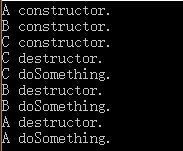
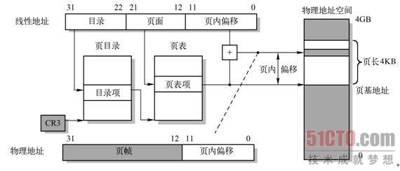

一、自我介绍及项目介绍
（项目没有问问题，言下之意是说我在介绍里已经说了）
二、C++
-
有3个C++ class的类，A是基类，B继承A，C继承B。
1）先new一个C类对象的实例，然后再释放，构造和析构的顺序是什么？
构造顺序：A→B→C
析构顺序：C→B→A
2）现在3个类都实现了一个叫do的虚函数，三个类的析构函数分别调了do函数，new的还是C的实例，析构时当它调到B类的析构函数时，它调的do函数会是ABC哪个类的do函数?
B的do函数
#include <iostream>
class A
{
public:
A() { std::cout << "A constructor." << std::endl; }
virtual ~A() { std::cout << "A destructor." << std::endl; doSomething(); }
virtual void doSomething(){ std::cout << "A doSomething." << std::endl; }
};
class B : public A
{
public:
B() { std::cout << "B constructor." << std::endl; }
virtual ~B() { std::cout << "B destructor." << std::endl; doSomething(); }
virtual void doSomething(){ std::cout << "B doSomething." << std::endl; }
};
class C : public B
{
public:
C() { std::cout << "C constructor." << std::endl; }
~C() { std::cout << "C destructor." << std::endl; doSomething(); }
void doSomething(){ std::cout << "C doSomething." << std::endl; }
};
int main()
{
C* pTest = new C();
delete pTest;
return 0;
}结果为：

3）当一个虚函数里没有写任何代码，编译器会自动生成什么样的数据代码？也就是对这个对象进行什么样的操作和处理？虚函数表会进行什么样的操作？
猜测：编译器会在对象的虚标中，生成一个指向该虚函数的指针。在析构时，会对虚表的指针进行修改（⭐⭐具体怎么修改的目前还没有查到）
4）这个类的对象是怎么调用虚表的？
对象的前4个字节存储了虚表的指针（32位系统）
-
new/delete和malloc/free的区别和关联？new和malloc实现上有区别么？delete[]不写数组长度怎么知道数组的长度？
1）区别：参考 new和malloc的区别
2）实现上的区别：参考new与malloc的区别以及实现方法
3）在new[]一个数组对象时，C++在分配数组空间时多分配了4个字节的大小，专门用来保存数组的大小，这4个字节的空间在数组的前面，而new[]返回的指针则指向第一个元素。在delete[]时就可以从数组之前取出这个保存的数，就知道需要调用析构函数的次数了。（注析构函数不仅释放对象数组，同时还有这4个字节，传入operator delete[]函数的参数不是数组对象的指针，而是指针的值-4）
-
new和malloc在写字节越界会发生非法写入异常么（不是stl容器的安全检查）
在new操作之后，系统可能返回一个新分配的内存，也可能从之前分配现在已经回收的内存中分配，至于这块内存之后的内容能否被访问是不确定的。当写字节越界后可能会出现以下情况：
1）后面的内存是非法内存，即后面的内存从未被程序申请过，已经位于堆内存管理的末端，在这种情况下，写字节越界会使得程序直接崩溃，一般可能会报memory violation等非法访问的异常；
2）后面的内存是被申请过，但还未被占用，属于本程序的空闲内存，那么读和写都是正确的；
3) 后面的内存不是空闲的，是本程序的，但有可能是另外一个数组的部分，那么写字节越界是可以的，但会影响到另外一个数组，对程序的运行有影响。
-
内存分页机制和内存虚拟地址向物理地址的映射
-
分页机制：包括一级页表（目录）、二级页表（页号）和页内偏移
-
地址映射：
1）在虚拟地址中，一级页表占10位，即有1024个表项，其中每个一级页表管理1024（2^10）个二级页表，每个二级页表包含4k个页内偏移。
2）由页目录号找到一级页表项（存储二级页表起始地址，4字节），二级页表起始地址+页号得到二级页表项（存储4k内存空间起始地址），4k内存空间起始地址+页内地址偏移即为实际内存地址
-
TLB(Translation Look-aside Buffer)转换检测缓冲区：
没有TLB的话地址映射需要进行三次内存访问（两次页表查询，一次数据访问）。进行内存访问时，会先用虚拟地址的高20位（页目录项号+页号）去查询TLB，若TLB hit则可以立即找到页表项并计算物理地址（省去了两次页表查询的内存访问）；若TLB miss则按原始的3次内存访问来完成这次数据访问，并更新TLB。
使用TLB，将最近访问过的页表项放入TLB中。
TLB查询：全相连（任何页表都可以存到TLB的任意位置，需要顺序查询，TLB太大时效率低），直接匹配（页表项通过取模的方式直接映射到TLB固定位置，容易产生冲突，冲突就要覆盖，反而有降低命中率），组相连（CPU做地址转换时，首先计算线性地址块对应哪个TLB表项组，然后在这个组内顺序比对）。
-
Page Fault（页表中断）：当页表项对应的页框不在内存上，会触发Page Fault异常，进程被挂起，硬盘上的页框数据开始被换入内存。
-

-
stl常用的4个容器，vector、list、map、unordered_map四个容器的算法，常用操作的耗时，适合使用的场合，依次来说。
-
vector：本质上相当于一个数组，在内存中分配一块连续的内存空间存储。
优点：1）不需要指定数组的大小，可以对数据进行动态操作，体现在push_back和pop_back；2）随机存取方便，支持下标操作符[]和.at()；2）节省空间。
缺点：1）在内部插入删除操作效率低，可能需要大量的拷贝；2）只能在vector的最后进行push和pop，不能在vector的头部进行push和pop；3）当动态添加的数据超过vector默认分配的大小时要进行整体的重新分配、拷贝和释放。
适用场合：当需要高效的随机存取，不在乎插入和删除的效率。
-
list：双向链表，每个结点包含一个value，一个前驱指针pre，一个后驱指针post。使用非连续的内存空间进行存储。
优点：1）不使用连续内存完成动态操作；2）可以很方便的进行插入和删除操作；3）可以在两端进行push和pop。
缺点：1）不能进行内部的随机访问，即不支持[]和.at()；2）相对vector占用内存多。
适用场景：当需要大量的插入和删除，而不关心随机存取。
-
map：红黑树，为键值对（key/value）容器，value可以修改，key不能修改。
优点：1）具有自动排序的功能，根据key值进行排序；2）插入和删除操作比vector快，但比list慢；3）可以使用[]检索数据。
缺点：1）每次插入值时，需要调整红黑树；2）随机存取比vector慢，但比list要快，查找的复杂度为O(logn)。
适用场景：如果打算存储数据字典，并且要求方便的根据key找到value，一对一的情况使用map，一对多的情况使用multimap。
-
unordered_map：hash散列表，元素排列无序
优点：查找效率高，查找时间复杂度可达到O(1)。
缺点：1）占用内存多，2）构造速度慢；3）可能会出现hash碰撞。
适用场景：当数据量较大时需要较好的查找效率
-
deque：双端队列
优点：1）随机访问方便，支持[]和.at()，但性能没有vector好；2）可以方便地进行插入和删除操作；3）可以在两端进行push和pop。
缺点：占用内存多
适用场景：如果既需要随机存取，且关心两端数据地插入和删除。
-
-
红黑树是一棵平衡二叉树么？为什么会分红黑结点，目的是为了解决算法上什么问题，插入和删除的时候会对树的结点会做什么操作？红黑树每个结点是怎么构造的，30~40万个结点有多少层？
-
红黑树不是一棵严格意义上的平衡二叉树，因为它不是严格控制左、右子树的高度或者节点数之差小于等于1。
-
红黑颜色的意义：当红黑树本质上是一棵2-3树时，红结点均为左子结点，该结点与父结点结合为一个3结点；黑结点则为一个2结点。（有些红黑树本质上好像是2-3-4树）
-
插入和删除，会对红黑树进行重新调整，使之重新满足红黑树的性质，调整的内容主要有左旋操作和右旋操作。(恢复红黑树的属性需要少量O(logn)的颜色变更（实际上是非常快的）和不超过三次树旋转（对于插入操作是两次）。)
-
红黑树每个节点包含：1）value；2）颜色；3）指向父结点的指针；4）指向左孩子结点的指针；5）指向右孩子结点的指针；（6） 默认构造函数？？？）
-
红黑树的高度平均为log(N)，最高不超过2log(N)。
-
-
hash碰撞怎么解决？开放地址法怎么实现的？
1）链地址法：将关键字相同的记录存储在一个线性链表中。
2）开放地址法：按照某种方法继续探测hash表中其他存储单元，直到找到空位置为止。$H_i(key)=(H(key)+d_i) mod M$，其中$i = 1,2,3,...,k(k<=M-1)$, $H(key)$为关键字$key$的直接hash地址，$M$为hash表的长度，$d_i$为每次再探测时的地址增量：a）当$d_i=1,2,3,....k$，为线性探测再散列；b）当$d_i=1^2,(-1)^2,2^2,(-2)^2,....k^2, (-k)^2$，为二次探测再散列；c）当$d_i=$伪随机数，为伪随机再散列。
3）再hash法：有多个不同的hash函数，当发生冲突时，使用第二个，第三个等
4）建立公共溢出区：假设hash函数的值域为[1,m-1]，则设向量hash_table[0,m-1]为基本表，每个分量存放一个记录，另外设向量over_table[0,v]为溢出表，所有关键字和基本表中关键字为同义词的记录，无论由hash函数得到的hash地址为何，一旦发生冲突，都填入溢出表。
-
假设要存储一个数据集，key和value都是32位整型，数据量大约有30~40万，对查找不在意，在意的是存储效率，使用map和unordered_map哪个存储空间比较少？
感觉应该是map，原因不知
三、图形学
-
空间变换过程？裁剪坐标系的定义域，z轴的远近是正还是负？视口变换是等同于屏幕了么？
1）模型顶点初始时在模型坐标系；2）乘上模型矩阵，变换到世界坐标系；3）再乘上观察矩阵，变换到观察坐标系；4）再乘上投影矩阵变换到裁剪坐标系；5）再经过透视除法变成NDC；6）再通过视口变换到窗口坐标。
裁剪坐标系定义域为[-w,w]
z轴远处为负，近处为正
视口变换时乘上窗口的长和宽
-
投影变换有几种，透视投影的参数有哪些？
正交投影和透视投影
透视投影的参数有：fov、aspect、zNear、zFar
-
Phong模型和PBR的区别？能量守恒怎么解释？Phong模型为什么不会守恒？
PBR是基于物理材质属性的，Phong模型则是通过调参数
能量守恒是指反射能量不大于入射能量
面试官给出解答：Phong模型的diffuse和specular是分开计算的，不会因为specular强，diffuse变弱
-
D,F,G的含义,Frenel现象，PBR为什么会将金属材质和非金属材质分开？为什么纯金属只有镜面反射？
D: 正态分布函数，用来得到与中间向量h方向相同的微平面的比率。
F: 菲涅尔方程，描述一束光照射到物体上被反射的光线所占的比率。
G: 几何遮挡函数，用来求微平面之间相互遮挡的比率，这种相互遮挡会损耗光线的能量。
菲涅尔现象：当垂直观察物体时，反光最弱，而当视线靠近切线方向（此时视线和表面法线的夹角接近90度），反光最强。
因为纯金属是电解质，它会吸收所有折射进金属的光，所以没有漫反射，只有镜面反射。
-
说明一下深度测试？深度检测是在管线哪一步之后进行的，深度数据在光栅化之后就能获得，为什么在片元着色器之后，除了写入会影响深度测试，还有其他的么？答了透明，他说那就不开深度测试就是了，除了透明呢？Alpha测试了解不？
深度测试原理：开启深度测试后，OpenGL会将一个片段的深度值与深度缓冲中的内容进行对比。OpenGL会执行一个深度测试，如果测试通过了的话，深度缓冲将会更新为新的深度值，如果深度测试失败（大于深度缓冲区的内容）了，片段将会被丢弃。
深度测试在片元着色器之后进行，因为片元着色器可能会写入深度值，除此之外，场景中有透明混合时，提前深度测试会将后面的片元丢弃。Alpha测试
Alpha测试：符合条件的 alpha 像素显示出来，不符合的丢弃掉。
-
early-z？
early-z是一个硬件功能，硬件会运行一个depth-only pre-processing pass，然后执行z-test，把不可见的片元裁剪掉。
early-z与alpha test：如果有alpha test，就不会执行early-z，因为early-z是在片元着色器之前写z-buffer，只有深度等于/小于z-buffer的片元才可以被渲染，此时的深度是没有被alpha test裁剪掉的部分的片元的z-buffer，透明部分挡住的后面的内容会被裁剪掉。
关于EarlyZ
-
VBO,VAO,VAO存的什么信息，FBO，OpenGL做后期处理除了创建FBO，还会创建额外的Buffer？
VBO：顶点缓存对象；
VAO：顶点数组对象，VAO中一般存储顶点坐标、法线、纹理坐标，以及指定如何解析这些数据；
FBO：帧缓存对象；
后期处理中除了FBO还有RBO？